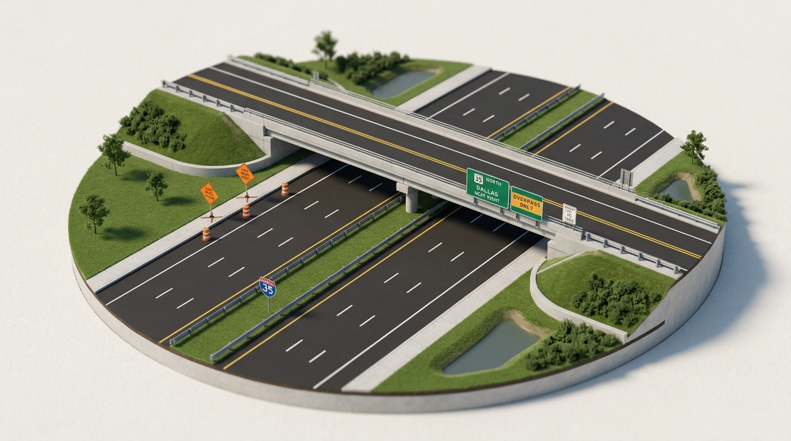

Aggressive Driving & Avoidance
Understanding the behavioral continuum between impatience, aggressive driving, and criminal road rage under Texas jurisprudence. Learn to recognize personal triggers, neutralize external confrontations, and de-escalate volatile kinetic roadway conflicts.
“Driving in a combative, forceful, or competitive manner. Intentionally aggravating other drivers can cause property damage, injury, or death.”
Codified under Texas Transportation Code § 545.401 (Reckless Driving Standard) & Texas Penal Code Ch. 22 (Assaultive Offenses).

The De-Escalator Tool
Road rage does not manifest in a vacuum; it escalates when physiological frustration collides with perceived slights. Select a common tactical driving trigger below to inspect the verified de-escalation countermeasure.
De-Escalation Strategy: Stuck in Traffic
Scenario: High-density arterial congestion, standstill highway corridors, or construction choke points.
“Do not get angry. Relax and listen to music. Traffic is temporary.”
Aggressive Driving vs. Criminal Road Rage
Texas law draws a strict demarcation between traffic infractions and criminal malice.
Aggressive Driving
Operation characterized by competitive, erratic, or forceful maneuvers without lawful justification.
- • Tailgating: Failing to maintain an assured clear distance (TTC § 545.062).
- • Erratic Weaving: Unsafe lane changes without signaling 100 feet in advance.
- • Blocking Passing Lanes: Speeding up specifically to prevent another motorist from passing.
Criminal Road Rage
An assaultive criminal act where a motor vehicle or deadly weapon is used to intentionally threaten or harm another.
- • Deadly Weapon Allegation: Using a 4,000-lb vehicle to ram, run off road, or side-swipe.
- • Aggravated Assault: Brandishing firearms, intentional brake-checking into crashes.
- • Roadside Physical Confrontation: Exiting vehicle to confront, assault, or vandalize.
Topic 08 Competency Verification
If another driver cuts you off aggressively on a Texas multi-lane roadway, what is your statutorily recommended defensive course of action?
How does the Texas driver education curriculum formally define aggressive driving?